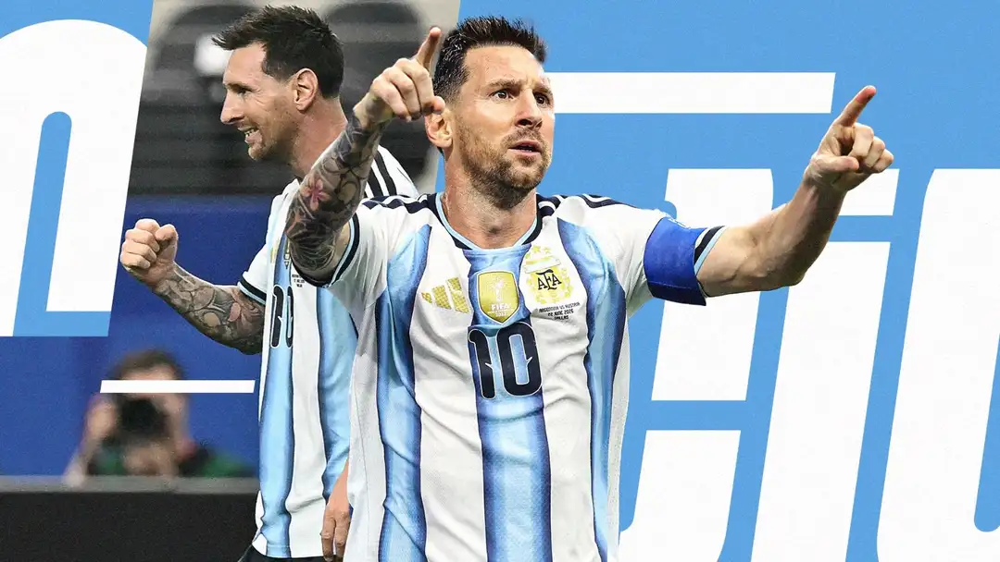

Messi, a última dança e a nova Argentina

Lionel Messi diz adeus à seleção argentina aos 39 anos e, com um último amistoso de despedida contra Benin.
Depois de 21 anos, 207 jogos e 125 gols marcados, a Pulce se despede da Selección , que levou de volta a novos patamares, e caminha para encerrar a carreira internacional, embora ainda mantenha em aberto a trajetória nos clubes e com o Inter Miami. Fecha-se, assim, uma parte fundamental da trajetória de Leo, feita, como é normal, de altos e baixos, coroada pela Copa do Mundo vencida no Qatar em 2022 mas também com a última amargura da final perdida para a Espanha em 2026. Um vínculo indissolúvel, o de Messi com a Argentina, como comprovam todos os seus números recordes. Nunca ninguém havia disputado tantas partidas com a Argentina (207), marcado mais gols (125) ou dado mais assistências (68). Sozinho, ele contribuiu para 193 gols com a seleção, estatísticas que se tornam ainda mais mastodônticas se for feita a conta total, que já aponta mais de 900 gols e 400 assistências. Com a Seleção, ele venceu (contribuindo enormemente) o Campeonato Mundial Sub-20, o Ouro Olímpico em 2008, a Copa América em 2021 e em 2024, a Copa dos Campeões CONMEBOL-UEFA em 2022 e, como dito, a Copa do Mundo de 2022, como capitão e melhor jogador do torneio. Inesquecível a final contra a França, contra a qual marcou dois gols e recolocou a taça mais cobiçada em Buenos Aires depois de 36 anos. Ele participou de 6 Copas do Mundo, disputando 34 partidas e 3064 (ambos recordes) e marcando 21 gols, atrás apenas de Mbappé. É dele, por sua vez, o recorde de assistências em Copas do Mundo (12) onde foi nomeado MVP tanto em 2014 quanto em 2022. Messi é o jogador mais jovem (18 anos e 357 dias) e também o mais velho (38 anos e 357 dias) a marcar um gol em uma Copa do Mundo, o único a ter balançado as redes em todas as fases de uma Copa do Mundo (fase de grupos, oitavas, quartas, semifinal e final) e o recordista de gols consecutivos - nove - em partidas oficiais da competição.